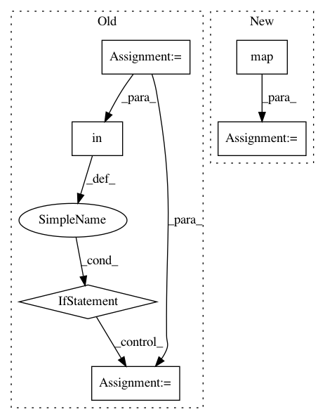

2de92392c7c725299874ad25c53d9349a2536042,sentence-embedding/custom-recipes/sentence-embedding-similarity/recipe.py,,,#,15
Before Change
npc=npc)
// Checking for existing columns with same name
new_column_name = "{}-{}".format(name, aggregation_method)
if new_column_name in df.columns:
j = 1
while new_column_name + "_{}".format(j) in df.columns:
j += 1
new_column_name += "_{}".format(j)
// Adding a new column with computed embeddings
if embedding_model.origin == "elmo":
df[new_column_name] = [str(v) for v in sentence_embeddings]
else:
df[new_column_name] = [str(v.tolist()) for v in sentence_embeddings]
After Change
// Computing distances between all couples of sentences
//distances = np.fromiter( map(lambda x: distance_function(x[0],x[1]) if (x[0] is not None and x[1] is not None) else None ,zip(*embeddings_list)) , float)
distances = np.fromiter( map(lambda x: distance_function(x[0],x[1]) if (np.sum(np.isnan(x[0]))==0 and np.sum(np.isnan(x[1]))==0) else np.nan ,zip(*embeddings_list)) , float)
logger.info("Computed similarity scores.")
In pattern: SUPERPATTERN
Frequency: 3
Non-data size: 6
Instances
Project Name: dataiku/dataiku-contrib
Commit Name: 2de92392c7c725299874ad25c53d9349a2536042
Time: 2018-11-13
Author: redaffane@gmail.com
File Name: sentence-embedding/custom-recipes/sentence-embedding-similarity/recipe.py
Class Name:
Method Name:
Project Name: dataiku/dataiku-contrib
Commit Name: 42910c039a97258e27f01949a35ecde2faf46ef5
Time: 2018-11-15
Author: redaffane@gmail.com
File Name: sentence-embedding/custom-recipes/sentence-embedding-similarity/recipe.py
Class Name:
Method Name:
Project Name: cjhutto/vaderSentiment
Commit Name: 55fcc4c981b8ec5a84e0886141fb0ed2b892de9e
Time: 2018-09-06
Author: christopherwong888@gmail.com
File Name: vaderSentiment/vaderSentiment.py
Class Name: SentiText
Method Name: _words_and_emoticons